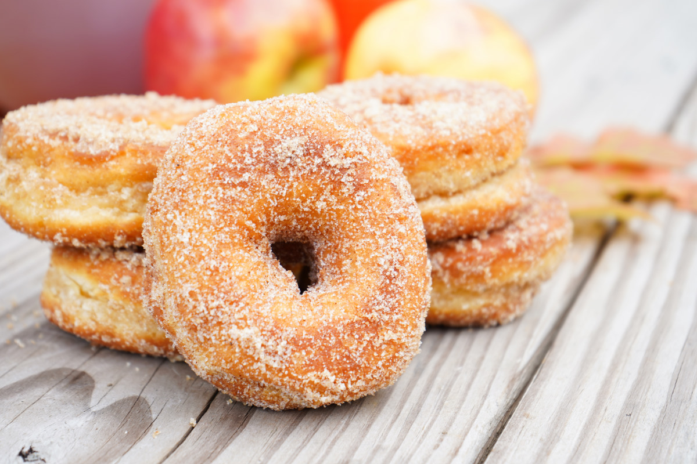

Campfire Donuts

Campfire Donut
this is an easy recipe on how to make campfire dounuts
Ingredients
- ½ cup white sugar
- ¼ teaspoon ground cinnamon
- 1 (10 ounce) can refrigerated biscuit dough
- 3 tablespoons melted butter
Steps
- Toss together the sugar and cinnamon in a bowl, set aside. Cut each biscuit into thirds, and roll into balls. Skewer on a toasting fork, and cook over hot coals, turning constantly, until golden brown. Dip into melted butter, then roll in cinnamon sugar.